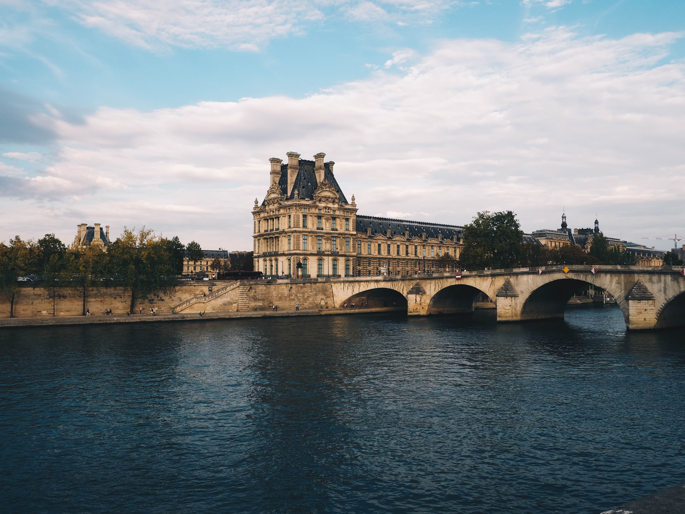
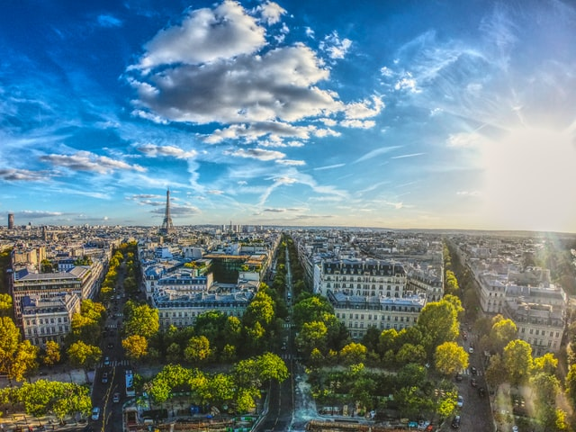
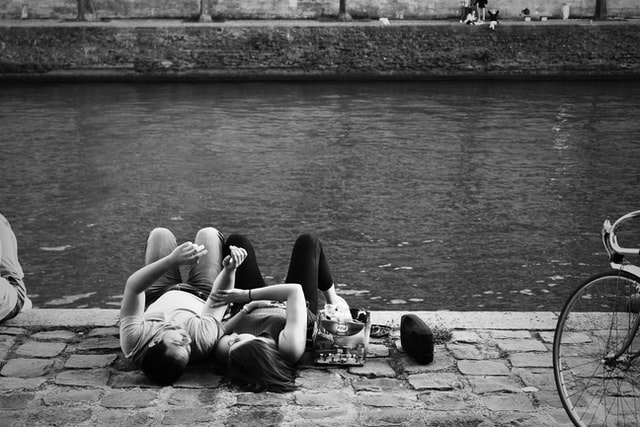
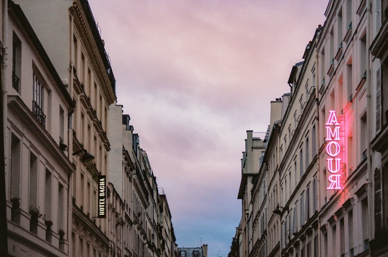

Paris, the capital city of France is often known as the city of romance and is a city steeped in art and culture. Like many of its neighboring European cities, Paris is full of beautiful architecture and museums showcasing fine art from some of the world’s most respected artists. But how did Paris become such a beautiful and romantic city, and has it always enjoyed such status?
Between the 1500s and 1800s, Paris was in fact the largest city in the entire world. Paris covers an area across the River Seine, in the North of France. Historians have found indication of settlement around the Paris area dating back as far as 4200BC. Much later down the line in 52BC the Romans conquered Paris and are responsible for the expansion of the city. The grandiose architecture that the Romans are remembered for was erected across Paris in the form of baths, theatres and palaces which became commonplace in the city they had named Lutetia.
Unfortunately, just like London, Paris suffered an epidemic of the Black Death, also known as the plague. In the 19th Century, Paris was subject to a Cholera epidemic too. During these times it was unlikely that Paris was seen as a romantic and relaxing place to visit! Paris has also hosted its fair share of battles and wars throughout the centuries, including the Hundred Years War, French Revolution and a centre stage role in World War I. Despite the disruption and disarray within the city, Paris has still been lucky enough to survive with its most attractive and famous landmarks in one piece. The Notre Dame Cathedral, Arc de Triomphe and the Louvre are all monuments of the culture of Paris and are among the reasons why so many tourists each year look for a property exchange or luxury family home swap Paris can easily provide.
The romantic reputation of Paris is likely to come from stories of Casanova’s presence in the city and his seductive and promiscuous ways. The Eiffel Tower in Paris is also a very romantic place for couples to visit, thanks to views over the moonlit Paris skyline and a feeling of being swept off one’s feet so far up from the ground. Aside from the Eiffel Tower, young lovers can skip through the flower lined avenues and fountains before enjoying an evening at the Opera or the ballet, followed by drifting off to a dreamy luxury apartment to spend the night together in love.
The best time to visit Paris is from June to August and September to October. Both summer and fall have its ups and downs. From June to August the weather in Paris is just about parfait(perfect). Average highs are in the high 70s and there are long days of sunshine. Unfortunately, summer is also the most crowded time – and the most expensive. For lower travel rates and significantly shorter lines at attractions, plan a visit in the fall. The seasonal foliage is known to stun, though the city's spring blooms are pretty famous too. If a travel deal is all that you're after, a visit during the winter will surely shave off travel expenses. Keep in mind though that Paris is one of the most visited cities in the world, seeing upward of 30 million travelers yearly. So, no matter what time you visit, there will always be tourists and some crowds.
